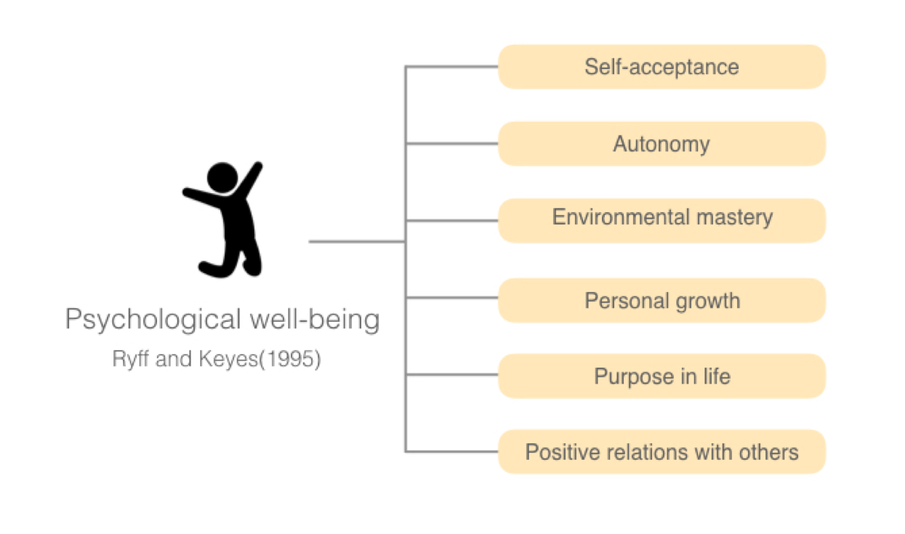
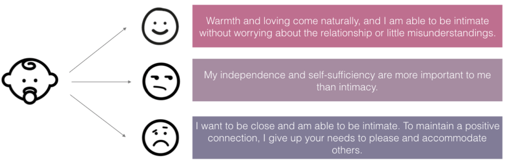
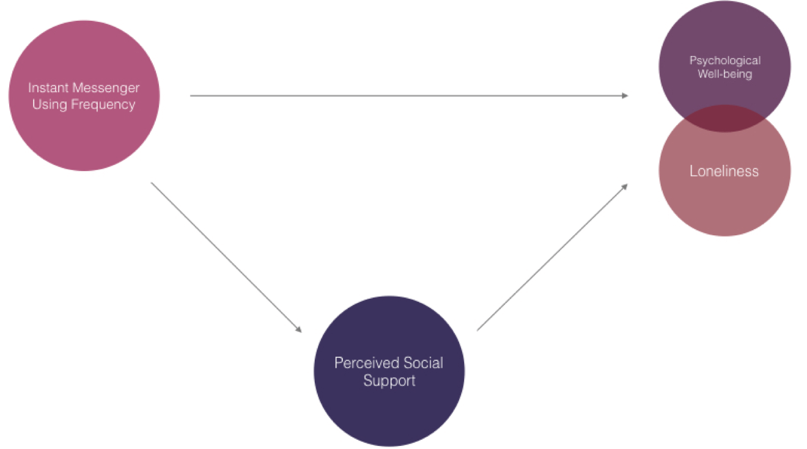
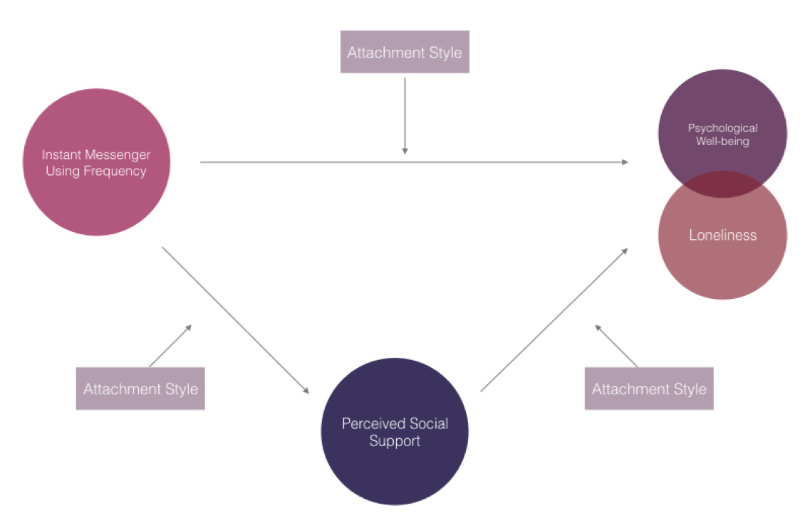
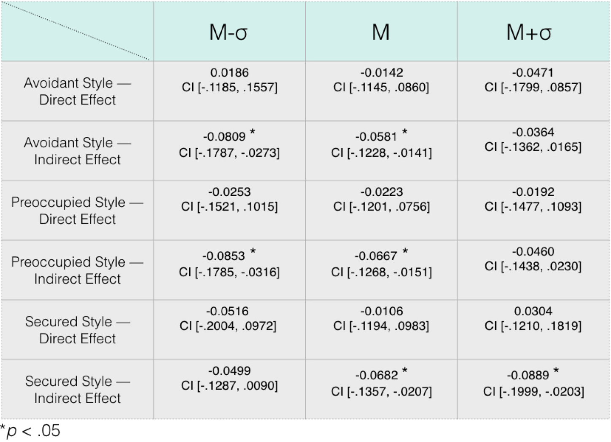
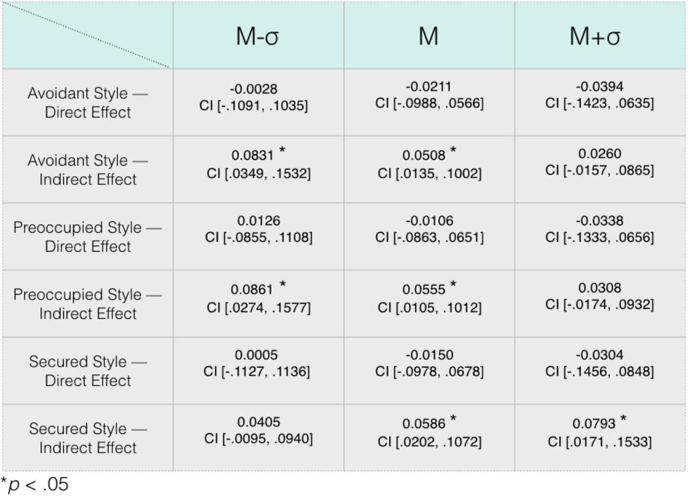
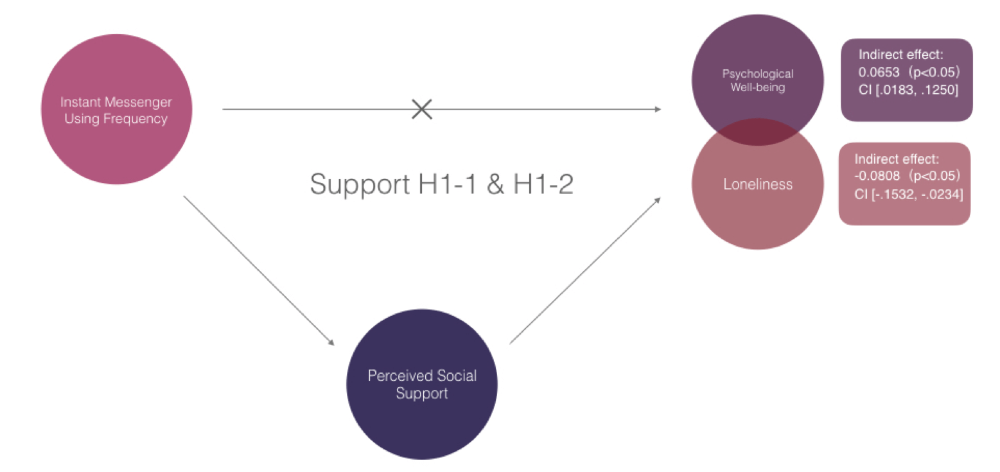
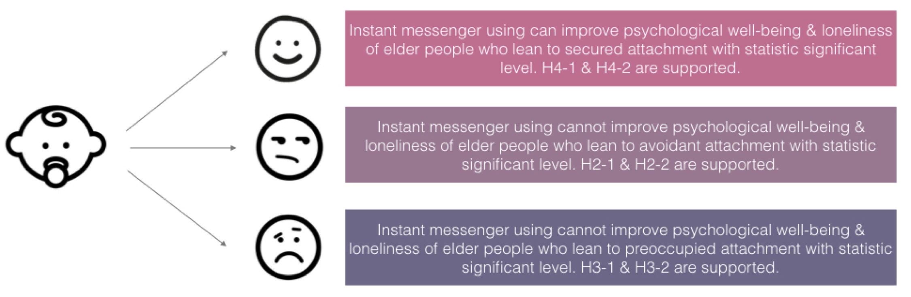

Evaluating the Elderly’s Use of Instant Messenger in Attachment Styles

Research Abstract
This study examines connections between the elderly’s use of instant messenger, psychological well-being, loneliness and attachment styles. Participants’ average age is 63 years old, ranging from 50 to 83. In this study, the independent variable is the frequency of using instant messenger; the mediator is perceived social support; and the moderator is attachment style. The frequency of using instant messenger was positively related to psychological well-being, and negatively related to loneliness through perceived social support. The findings demonstrate that after using instant messengers, participants feel less lonely, but the effect depends on the attachment styles. Results show that participants who are comfortable with closeness, and less anxious or fearful about their interpersonal relationships have the most significant effect.
My RoleResearcher
ToolsSPSSSurveyInterview
Team SizePersonal project
TimeframeSept. 2014 – Dec. 2014
SkillsAnalytical researchStatistical methodsModel predictionHypotheses testing
Rationales
- Psychological well-being is strong related to loneliness and depression based on the results from previous studies (Blazer, 1982; C. Cutrona, Russell, & Rose, 1986; Oxman, Berkman, Kasl, Freeman, & Barrett, 1992; Shanas, 1979).
- Attachment styles not only affect the relationship between parents and children, also affect the relationship in adulthood.
- Psychological well-being and loneliness are often related to social support.
- Interpersonal communication is the key factor to loneliness, well-being, or even depression, etc. Nowadays, instant messenger usage is a popular way for the elder in Taiwan to connect and communicate with their family members and friends.
Psychological Well-being
There are 6 dimensions in the concept "psychological well-being"
Attachment Styles
According to the literature review, there are 3 types of attachment styles: secured; preoccupied; and avoidant.
Hypotheses
- H1-1: Perceived social support will mediate the elderly’s psychological well-being when they use instant messenger.
- H1-2: Perceived social support will mediate the elderly’s loneliness when they use instant messenger.
- H2-1: The more elder people lean to avoidant attachment style, the less the increase of psychological well-being through instant messenger using.
- H2-2: The more elder people lean to avoidant attachment style, the less the decrease of loneliness through instant messenger using.
- H3-1: The more elder people lean to preoccupied attachment style, the less the increase of psychological well-being through instant messenger using.
- H3-2: The more elder people lean to preoccupied attachment style, the less the decrease of loneliness through instant messenger using.
- H4-1: The more elder people lean to secured attachment style, the more the increase of psychological well-being through instant messenger using.
- H4-2: The more elder people lean to secured attachment style, the more the decrease of loneliness through instant messenger using.
Model Prediction
Mediator Model Prediction
Based on literature, psychological well-being and loneliness are often related to social network models, perceived social support and received social support. Yet prior studies seldom closely examine the relationship among them. In this study, I suggest the instant messenger using frequency could affect psychological well-being and loneliness, yet the effects are mediated by perceived social support.
Mediator + Moderator Model Prediction
In addition to predict whether the attachment styles, which are frequently affect adults' relationship, would play a role in the model, I suggest that the attachment styles could moderate the effects caused by instant messenger using frequency.
Data Collection
I collected 172 samples by hardcopy questionnaires, the average age of participants is 63 years old.
Data Analysis
Using PROCESS macro for SPSS for statistical mediation, moderation, and conditional process analysis. Here I used model 4 to analyze mediation effects, and model 59 to analyze to examine moderation effects.
Results
Loneliness as DV, direct and indirect effect in 3 attachment styles.
Psychological well-being as DV, direct and indirect effect in 3 attachment styles.
Discussion
After mediating by the perceived social support, instant messenger using frequency no longer has the direct effects on psychological well-being and loneliness. The indirect effects on psychological well-being and loneliness are significant. Thus H1-1 and H1-2 are supported.
Older people who lean to secured attachment style can improve psychological well-being and level of loneliness significantly, thus H4-1 & H4-2 are supported. Older people who lean to avoidant and preoccupied attachment styles cannot improve psychological well-being and level of loneliness by using instant messenger to perceive social support significantly. Therefor H2-1, H2-2, H3-1, H3-2 are supported.
Honor
This research paper got accepted by Annual Conference of the Chinese Communication Society, the student group acceptance rate was 42%.